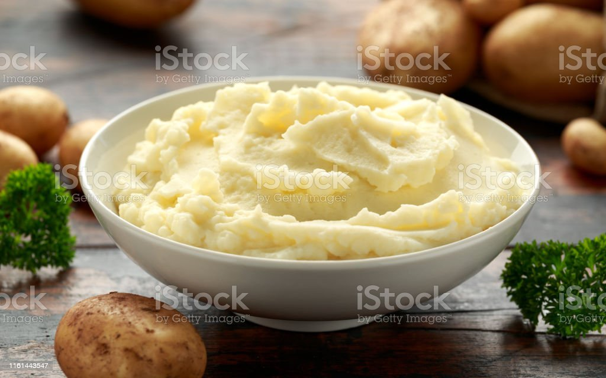

Simple Vegan Garlicky Potatoes

Description
Great for Thanksgiving or any time! It has garlic, it's smooth, and it's vegan. Serve with mushroom gravy!
Ingredients
- 4 pounds potatoes, peeled and cut into chunks
- 4 cups water
- 2 cups vegetable broth
- 4 cloves garlic, thinly sliced, or more to taste
- 1 cup rice milk, or as needed
Steps
- Combine potatoes, water, broth, and garlic in a pot. Bring to a boil; reduce heat to medium-low and cook until soft, about 15 minutes.
- Drain potatoes and reserve cooking water. Return potatoes to the pot and stir over medium heat until any excess moisture is cooked off, about 1 minute.
- Remove pot from heat. Add some reserved cooking water and rice milk, alternating between them, while stirring vigorously. Stop before potatoes become too soggy or liquid begins to accumulate in the pot.